Compare paired and unpaired Bayesian posteriors on contingency table differences
requireStatsToolbox
setSeed(1);
thetaX = [0.3 0.4 0.45];
thetaY = [0.5 0.5 0.5];
Nthetas = length(thetaX);
N = 10;
Ntrials = 9; nr = 3; nc = 3;
for t=1:Nthetas
for i=1:Ntrials
X = rand(1,N) < thetaX(t);
Y = rand(1,N) < thetaY(t);
n1 = N; n2 = N; y1 = sum(X); y2 = sum(Y);
[deltasUnp, postUnp, thetasUnp] = ...
contingencyTableUnpairedDiffPostMc(n1,y1,n2,y2);
figure(); hold on
plot(deltasUnp, postUnp, 'linewidth', 3, 'color', 'k');
C = computeCounts([X(:) Y(:)]+1, [2 2]);
n00 = C(1,1); n10 = C(2,1); n01=C(1,2); n11=C(2,2);
assert(N==(n00+n10+n01+n11));
[deltasPaired, postPaired, thetasPaired] = ...
contingencyTablePairedDiffPostMc(n00, n10, n01, n11);
plot(deltasPaired, postPaired, 'r:', 'linewidth', 3);
deltaTrue = thetaX(t)-thetaY(t);
ttl = sprintf('%s=%3.2f, n10=%d, n01=%d, y1=%d, y2=%d', ...
'\delta', deltaTrue, n10, n01, y1, y2);
title(ttl);
set(gca, 'xlim', [-1 1]);
verticalLine(deltaTrue);
end
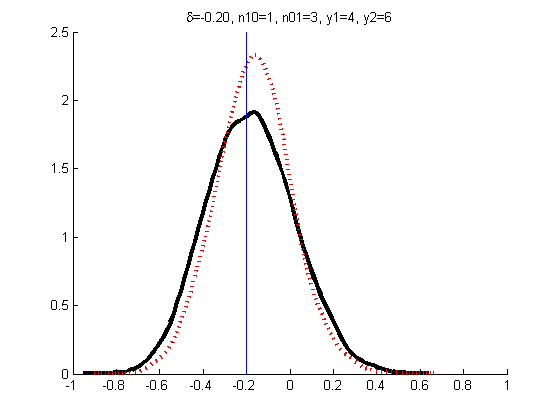 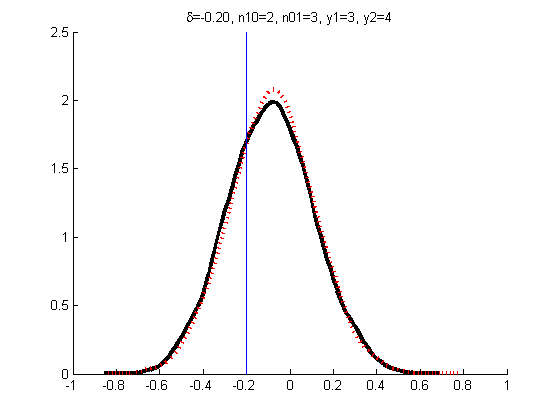 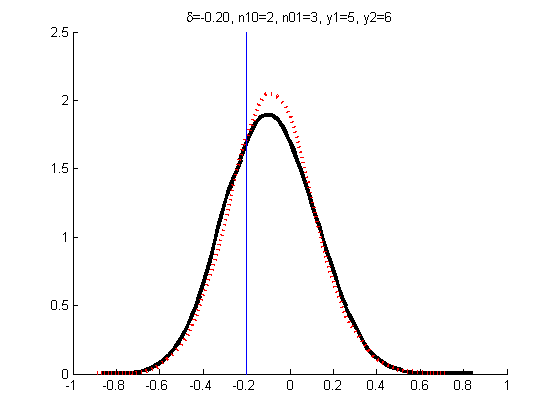 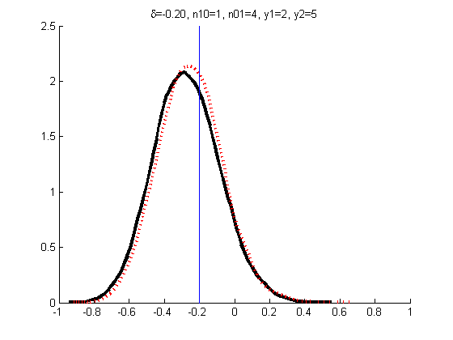 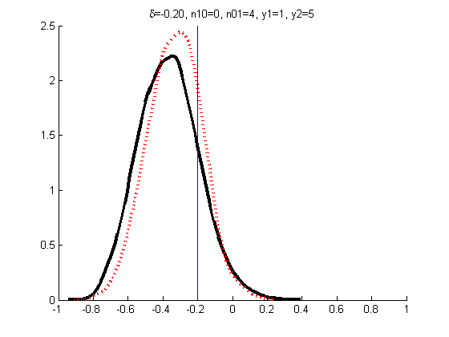 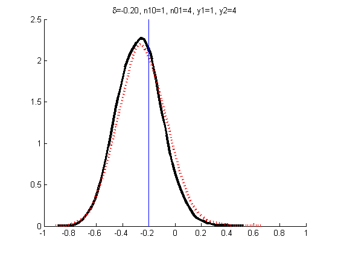

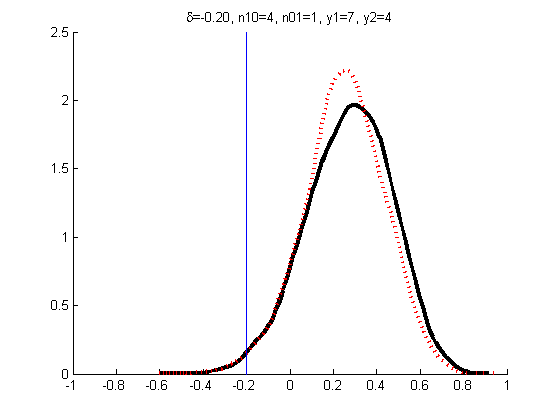 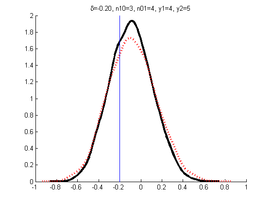 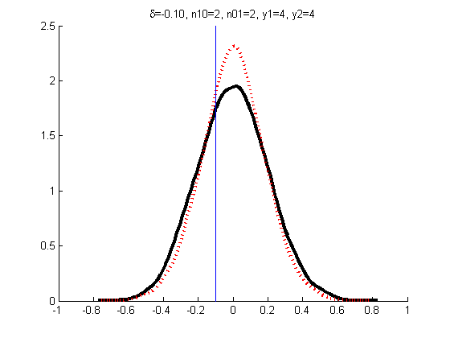 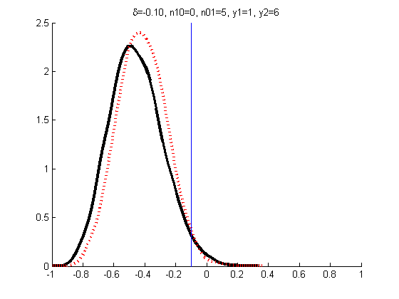 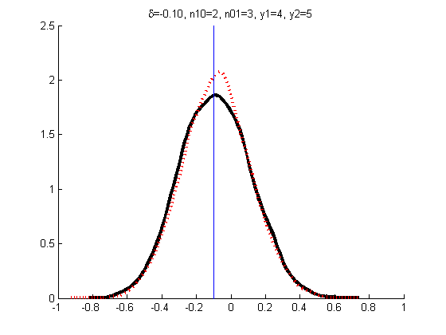 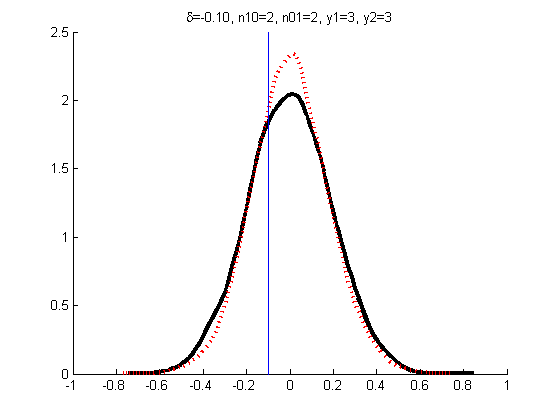 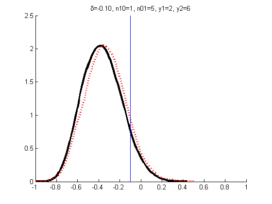 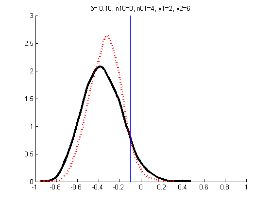 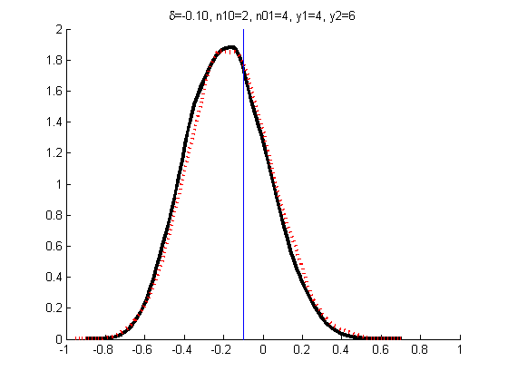 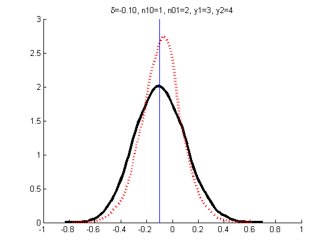 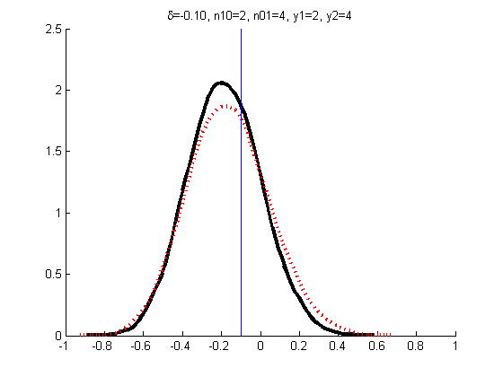 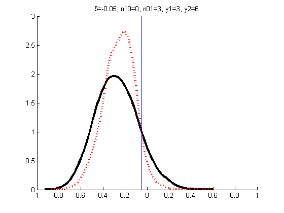 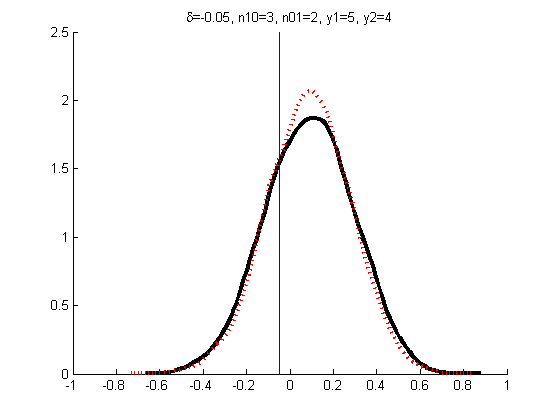 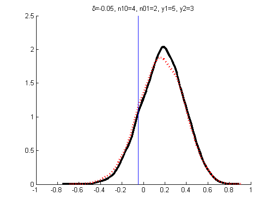 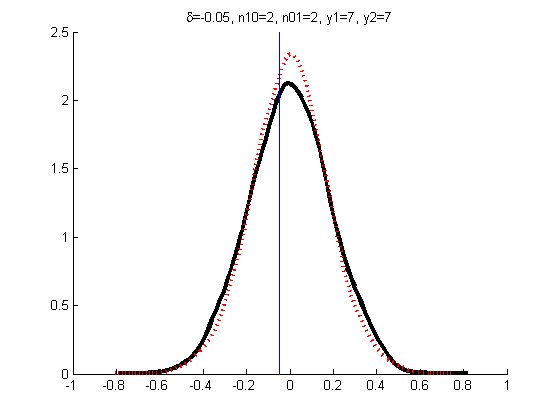 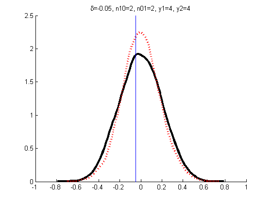 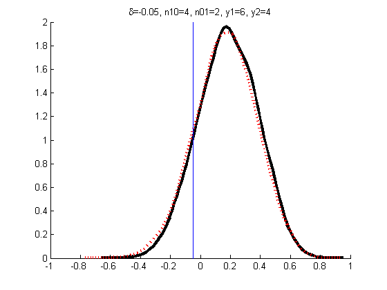 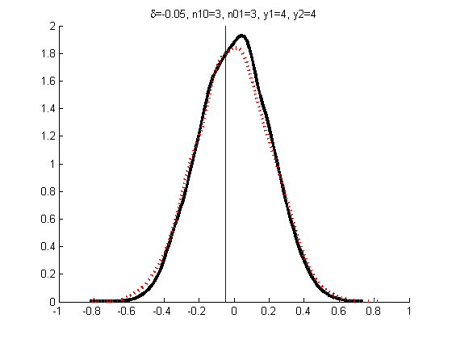

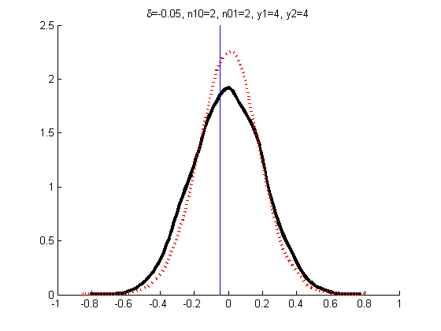
end